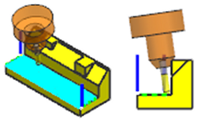
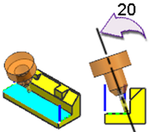
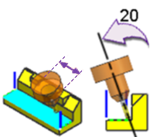

Tool Axis Tilt enhancements
What is it?
The Tool Path Tilt dialog box is now renamed Tilt Tool Axis. New options are added to the dialog box to give you additional control over the tilting behavior of the tool axis.
Default tool behavior:
-
The tool begins cutting in the original fixed tool axis orientation.

-
As NX encounters a potential collision, it tilts the tool minimally to avoid the collision and then returns the tool to the original tool axis orientation. NX repeats these tool motions when it encounters the next collision.

New Options:
-
Use the new Preferred Tilt from Fixed Axis option to specify a tilt angle value. NX tilts the tool by this value as it attempts to avoid the first collision, and then it returns the tool to its original tool axis orientation. It repeats these motions when it encounters the next collision.
In this example, the Preferred Tilt from Fixed Axis = 20.

Note
If the value you enter is not appropriate to avoid a collision, NX will allocate a different gouge free tool axis orientation.
-
Select the
 Maintain Current Tilt between Collisions check box to keep the tool from tilting back to its origin tool axis orientation between collisions. This option reduces unnecessary rotary tool axis movement.
Maintain Current Tilt between Collisions check box to keep the tool from tilting back to its origin tool axis orientation between collisions. This option reduces unnecessary rotary tool axis movement.
If you select this check box, you can use the Max Distance Between option to specify the distance within which the tool maintains the current tool axis tilt angle between collisions.

If the Max Distance Between value is less than the actual distance between collisions, the tool returns to the original tool axis orientation after the first collision.

Why should I use it?
You can use the new options to reduce rotary axis changes by controlling whether the tool axis returns to the default tilt between features.
Where do I find it?
|
Application |
Manufacturing |
|
Prerequisite |
|
|
Operation Navigator |
Right click an operation→Tool Path→ Tilt Tool Axis |